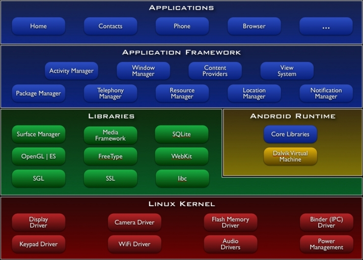

Quest’anno il macro-argomento che abbiamo affrontato è stato Android, sia dal punto di vista teorico che pratico, con lo sviluppo di applicazioni. Android è un
sistema operativo basato sul kernel Linux, inizialmente sviluppato da una startup omonima e poi acquistato da Google nel 2005. Le sue caratteristiche principali,
tra cui leggerezza, praticità e il fatto di essere open-source, lo rendono oggi il sistema operativo mobile più diffuso al mondo.
Abbiamo studiato la sua architettura a strati, dove ogni livello ha una funzione specifica: lo strato più basso interagisce con l’hardware, mentre quello più alto
si interfaccia con l’utente.

.apk, l’equivalente del .jar. onCreate(), onPause(), onResume().